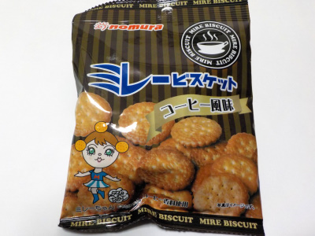

野村煎豆加工店のミレービスケット コーヒー風味
更新日 : 2022/10/23

香ばしくて甘くてしょっぱいビスケットです。
糖分、塩分、油分があるので満足感があります。それにコーヒー風味の香ばしさが入って美味しさが増しますね。
味わい深いお菓子でした。
高知県高知市大津乙1910-3
更新日 : 2022/10/23

香ばしくて甘くてしょっぱいビスケットです。
糖分、塩分、油分があるので満足感があります。それにコーヒー風味の香ばしさが入って美味しさが増しますね。
味わい深いお菓子でした。